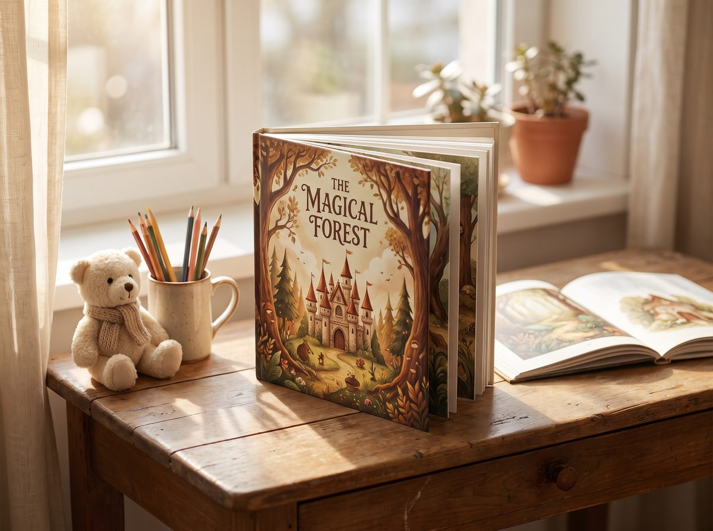
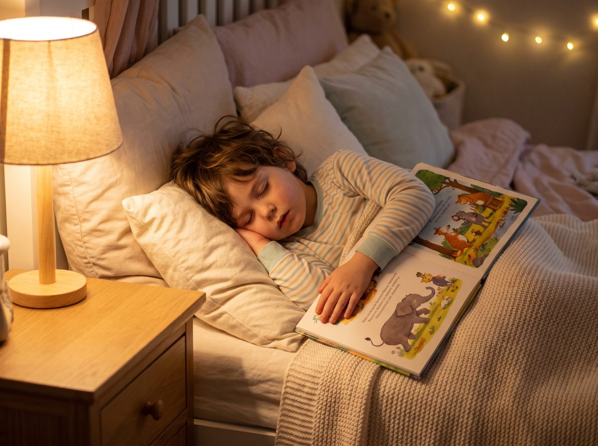

Магия превращения
Увидьте, как фотография вашего ребёнка оживает в волшебных мирах наших сказок


Увидьте, как фотография вашего ребёнка оживает в волшебных мирах наших сказок
Один сюжет — четыре совершенно разных воплощения


Подарите своему ребёнку незабываемые воспоминания
